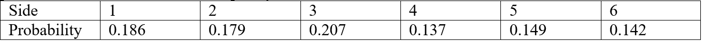
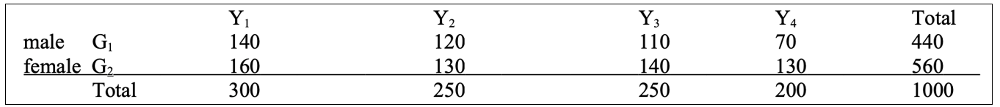
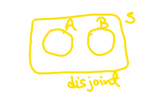
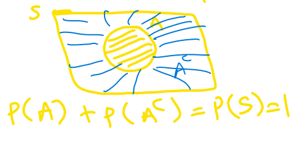

Chapter 7 MATH 224: Probability Basics Worksheet
7.1 Quick Review:
The starting point in studying probabilities is the concept of an \(\underline{\textbf{experiment or random process}}\), by which we mean some act or observation whose outcome is not known in advance. Simple examples would be
\(\bullet\ \ \text{Rolling a die} \\ \\\)
\(\bullet \ \ \text{Tossing a coin twice} \\ \\\)
\(\bullet \ \ \text{Observing the temperature at GSO at 3:00 pm this afternoon (Fo)} \\\)
Although we cannot predict what we will observe, we can in some cases compile a list of all the outcomes we might observe. This is known as the \(\underline{\textbf{sample space}}\) for the experiment, and is a set in mathematical terms, that is to say a collection of distinct items. Generally for a sample space of n possible outcomes we write \(S = {E1, E2, ... , E_n}\) . For example in the die rolling experiment we have \(\textit{S={1, 2, 3, 4, 5, 6}}\) and in the coin tossing experiment we could list the outcomes as \(\textit{S={TT, TH, HT, HH}}\) It is a little harder to list the sample space for the third experiment, given the current temperature a list of the numbers between 40 and 80 would probably suffice.
We use the outcomes in the sample space for computing probabilities for any event according to the following basic rule:
\[ \textbf{P(A) = the sum of the probabilities of all the outcomes in the event A} \]
Events in probability are just the same as sets in mathematics, so you should know the principle operations on sets:
\(\bullet\) UNION: A \(\cup\) B (“A or B”) is the set of all outcomes in A or in B or in both
\(\bullet\) INTERSECTION: A \(\cap\) B (“A and B”) is the set of outcomes that are in both A and B
\(\bullet\ \ \text{COMPLEMENT: Ac (“not A”) everything outside of A (but in S)}\)

It is important to realize that A \(\cup\) B, A \(\cap\) B, and \(A^c\) are all sets, that is to say, they are collections of \(\textit{distinct}\) items, and no element may be listed twice.
For example, with reference to the die rolling experiment, define the event B as “a number at least as great as 5 comes up”, so B={5,6}. For A={2,4,6} (an even number comes up), we have
\(\bullet\ \ \ A \cup B \text{={2,4,5,6},}\\ \\\)
\(\bullet \ \ \ A\cap B \text{={6},}\\ \\\)
\(\bullet \ \ A^c \text{={1,3,5}}, \\\)
\(\bullet \ \ B^c \text{={1,2,3,4}}\)
Suppose the die is assumed to be fair. This, by definition, means that each side is equally likely to come up when the die is rolled. If we assign a total probability of 1 to the entire sample space, then we should assign a probability of 1/6 to each of the 6 outcomes in the sample space, so
\[ \text{P(1) = P(2) = P(3) = P(4) = P(5) = P(6) = 1/6.} \]
Thus, we should obtain:
\(P(A) = \frac{1}{6}+\frac{1}{6}+\frac{1}{6}=\frac{3}{6}=\frac{1}{2}\)
\(P(B) = \frac{1}{6}+\frac{1}{6}=\frac{2}{6}=\frac{1}{3}\)
\(P(A \cup B) = \frac{1}{6}+\frac{1}{6}+\frac{1}{6}+\frac{1}{6}=\frac{4}{6}=\frac{2}{3}\)
\(P(A \cap B) = \frac{1}{6}\)
\(P(A^c) = \frac{1}{6}+\frac{1}{6}+\frac{1}{6}=\frac{1}{2}\)
\(P(A^c) = \frac{1}{6}+\frac{1}{6}+\frac{1}{6}+\frac{1}{6}=\frac{2}{3}\)
Some points worth noting:
\(\bullet\) P(A U B) = 4/6 does NOT equal P(A) + P(B) = 5/6 (this is because the two sets have an element, 6, in common).
\(\bullet\) P(Ac) = 1 - P(A) and P(Bc) = 1 – P(B).
\(\bullet\) Also note that in cases where all the outcomes in the sample space are equally likely, the rule about adding the probabilities for all of the outcomes in the event simplifies to counting the number of outcomes in the event and dividing by the number out outcomes in the sample space. So, for the events A and B above, P(A) = 3/6 = 1⁄2, and P(B) = 2/6 = 1/3.
\(\bullet\) Generally, if A contains m outcomes, and the sample space has n equally likely outcomes (so the probability for each outcome is 1/n), then P(A) = m/n.
At this stage, let us write down some general rules or AXIOMS for probability. The events A, B below are now general events in a sample space, not the specific ones described above.
- For any sample space, P(S) = 1
- For any event A, 0 \(\le\) P(A) \(le\) 1
- General addition rule: If A and B are any two events, disjoint or not, then the probability that at least one of them will occur is
\[ \text{P (A or B) = P (A) + P (B) - P (A and B) } \]
where P(A and B) is the probability that both events occur. Here, A or B occurs means A, B, or both A and B occur.
4)Addition rule for disjoint events: For any events A, B which have no common outcomes,
\[ \text{P(A U B) = P(A) + P(B)} \]
Events which have no outcomes in common are often referred to as mutually exclusive (or \(\textit{disjoint}\)). If two events A, B are mutually exclusive, we write P(A \(\cap\) B) = \(\emptyset\) , where \(\emptyset\) is referred to as the \(\textit{empty set}\). It is sort of equivalent to the number zero in arithmetic.
Note that using the first and third rules, we have \(1 = P(S) = P(A \cup A^c) = P(A) + P(A^c)\) ) , so we have a general rule that for any set \(A, \ P(A^c) = 1 – P(A)\). This is often called the law of complements.
Exercise 1. A set of 11 cards is numbered 1 through 11. A card is picked at random and the following events defined: A - the number on card is odd: B - the number on the card is 5 or higher. Find
P(A) =
P(B) =
P(A and B) =
P(A or B) =
Exercise 2. (Sample space where the outcomes are NOT equally likely): Professor Donald Fraser of the University of Toronto constructed a (purposely) uneven die. On inspection it was clear that the sides would not have equal probability. He rolled it 12,800 times, and came up with the following empirical probabilities (based on relative frequency):

For the events A (even number) and B (at least 5) compute:
\(\text{P(A) =}\)
\(\text{P(B) =}\)
\(P(A \cup B)=\)
\(P(A\cap B) =\)
\(P(A^c) =\)
\(P(B^c) =\)
Exercise 3. A group of 1000 students is classified by gender \(G_1\) (male) or \(G_2\) (female), and by year, \(\textbf{Y}_1\) (freshman), \(\textbf{Y}_2\) (sophomore), \(\textbf{Y}_3\) (junior), or \(\textbf{Y}_4\) (senior). This results in the following table:

If a student is randomly selected, find the probability that the student:
Is a junior, P(\(Y_3\)) =
Is a female freshman, P(\(G_2\) and \(Y_1\)) =
Is a male or a junior, P(\(G_1\) or \(Y_3\)) =
d)Is not a freshman, P(not \(Y_1\)) =
- Is not a male and is not a junior, P(not \(G_1\) and not \(Y_3\)) =
Exercise 4. Here is the “Craps Game” sample space, where a red and a green die are rolled. Each outcome (i,j) represents the red die coming up i and the green die coming up j.
There are n=36 outcomes, and for fair dice it is reasonable to assume they are equally likely.Find the probability of each of the following events. Identify which pairs of events are disjoint.
A “sum is 7”:
P(A) =
B “sum is 11”:
P(B) =
C “sum is 6”:
P(C) =
D “both dice show same number”:
P(D) =
E “both dice odd”:
P(E) =
F “both dice even”:
P(F) =
Exercise 5. True or False
If A and B are mutually exclusive (disjoint) events, then P(A and B) = 0.
For any event A, P(A) + P(\(A^c\)) = 1.
Solution
Question 1:
Since, A = {1,3,5,7,9,11}, B= {5,6,7,8,9,10,11}, (A and B) = {5,7,9,11} and (A or B)={1,3,5,6,7,8,9,10,11}
\(\text{P(A)}=\frac{6}{11}\)
\(\text{P(B)}=\frac{7}{11}\)
\(\text{P(A and B)}=\frac{4}{11}\)
\(\text{P(A or B)=P(A)+P(B)-P(A and B)}\\=\frac{6}{11}+\frac{7}{11}-\frac{4}{11}=\frac{9}{11}\)
Question 2:
A = {2,4,6}, B= {5,6}, (A\(\cup\)B) = {2,4,5,6} and (A \(\cap\) B)={6}
\(\text{P(A)=P(2)+P(4)+P(6)=}0.179+0.137+0.142=0.458\)
\(\text{P(B)=P(5)+P(6)}=0.149+0.142=0.291\)
\(\text{P(A U B)}=\text{P(2)+P(4)+P(5)+P(6)}=0.179+0.137+0.149+0.142 \\=0.607\)
P(A\(\cap\)B)=P(6)=0.142
P(\(A^c\))= 1 - P(A) = 1 - 0.458 = 0.542
P(\(B^c\))= 1 - P(B) = 1 - 0.291 = 0.709
Question 3:
The probability that the student :
Is a junior, P(\(Y_3\)) = \(\frac{250}{1000}=0.25\)
Is a female freshman, P(\(G_2\) and \(Y_1\))= \(\frac{160}{1000}=0.16\)
Is a male or a junior, P(\(G_1\) or \(Y_3\))= \(\frac{440+140}{1000}=\frac{580}{1000}=0.580\)
or P(\(G_1\))+ P(\(Y_3\)) - P(\(G_1\) and \(Y_3\)) = \(\frac{440}{1000}+\frac{250}{1000}-\frac{110}{1000}\)
Is not a freshman, P(not \(Y_1\))= 1 - P(\(Y_1\)) = 1 - (\(\frac{300}{1000}\)) =1 - 0.3 = 0.70
Is not a male and is not a junior, P (not \(G_1\) and not \(Y_3\)) = \(\frac{150+130+130}{1000}\) = \(\frac{420}{1000}=0.420\)
Question 4:
Note: For this question, also ask them to identify which pair of event are disjoint.
- A “sum is 7” : {(1,6),(6,1), (2,5), (5,2), (3,4), (4,3)}
P(A) = \(\frac{6}{36}=\frac{1}{6}\)
- B “sum is 11”: {(5,6),(6,5)}
P(A) = \(\frac{2}{36}=\frac{1}{18}\)
- C “sum is 6”: {(1,5), (5,1), (2,4), (4,2), (3,3)}
P(C) = \(\frac{5}{36}\)
- D “both dice show small number”: {(1,1), (2,2), (3,3), (4,4), (5,5),(6,6)}
P(D) = \(\frac{6}{36}=\frac{1}{6}\)
- E “both dice odd”: {(1,1), (1,3), (1,5), (3,1), (3,3),(3,5),(5,1),(5,3),(5,5)}
P(E) = \(\frac{9}{36}=\frac{1}{4}\)
- F “both dice even”: {(2,2), (2,4), (2,6), (4,2), (4,4),(4,6),(6,2),(6,4),(6,6)}
P(F) = \(\frac{9}{36}=\frac{1}{4}\)
Question 5:
If A and B are mutually exclusive (disjoint) events, then P(A and B) = 0.
Ans : TRUE

For any event A, P(A) + P(\(A^c\)) = 1.
Ans : TRUE
